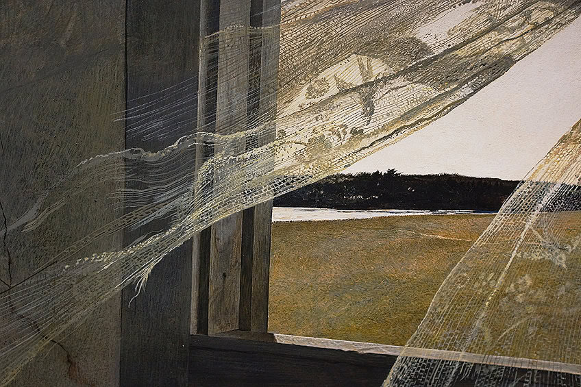
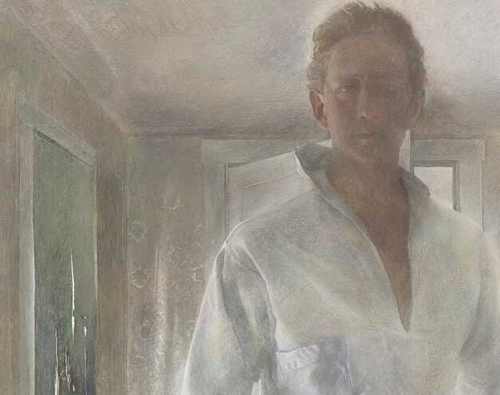
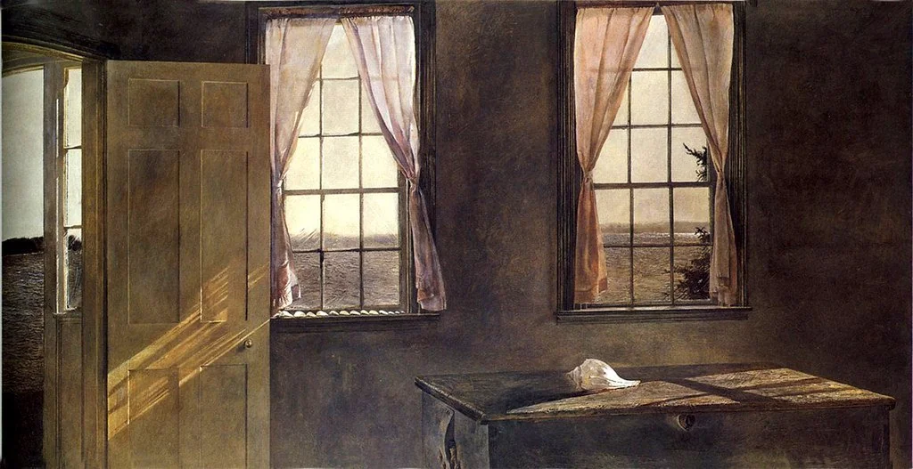
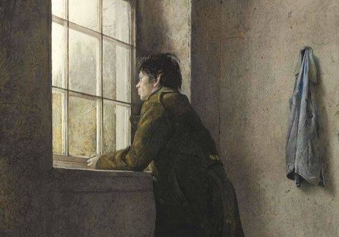

↓ Jump down to the documentary video
Who He Is
Andrew Wyeth established himself as a master of realism amid the ascendancy of abstraction during the 1940s, remaining faithful to his meticulous depictions of rural America for more than sixty years. His subjects were the immediate surroundings of his modest life—family, friends, and, above all, the landscapes of his hometown of Chadds Ford, Pennsylvania, and his summer retreat in Cushing, Maine.
He painted in tempera and watercolor. His work is realistic—sometimes photorealistic—but the feeling it carries is something else. There is a stillness to it that takes a moment to settle into. It doesn't announce itself.

Christina's World, 1948
You can feel that quiet, heavy atmosphere in early works like Winter Fields. Painted before Wyeth began to heavily incorporate figures into his work, it portrays a crow lying lifeless in a desiccated field, with only two distant houses visible on the horizon. Completed at the height of World War II, this somber, bleak scene may have been intended to evoke the casualties occurring in the battlefields of Europe, or to reference the Revolutionary War dead of the Brandywine battlefield adjacent to his farm.
That same mysterious tension reached its absolute peak in his 1948 masterpiece, Christina’s World. Acquired by the Museum of Modern Art in 1949, it quickly became one of the most recognizable images in the history of American art—standing alongside Whistler’s Mother and Grant Wood’s American Gothic. It has been so widely reproduced that it became a permanent part of American popular culture, even as it ignited heated arguments about America’s self-image and taste.
Yet, its popularity endures because of its profound, unsettling ambiguity. A modest-sized scene painted in high detail with egg tempera, it depicts a young woman in a pink dress lying in a mown field in coastal Maine. Although she reclines gracefully, her upper torso is strangely alert. Her silhouette is tense, almost frozen, giving the impression that she is fixed to the ground. Stock-still, she stares—perhaps with longing, perhaps with fear—at a distant farmhouse. The scene is familiar and picturesque, but it leaves you with a mysterious question: Who is this young woman, seemingly vulnerable but somehow indomitable, and what is she waiting for?
My Favorite Works
Wyeth painted hundreds of pieces, but these four stand out to me the most:

Wind from the Sea (1947)
Wind from the Sea, painted a year before Christina's World, captures a moment on a hot summer day when Wyeth opened the seldom used window in an attic room. The picture is eerily alive with movement as the wind blows the curtains into the room. The tattered, transparent fabric is light and airy, with small embroidered birds along the edges that seem ready to dart into the house. In contrast, the sun-bleached wooden window sill looks sturdy and solid.

The Revenant (1949)
An Art Poem, inspired by Andrew Wyeth’s 1949 self-portrait. In his own words: “I walked in [to the Olsen House], went upstairs, and suddenly I was startled. There was another figure standing there. It was me in a dusty mirror… The reason I did it was that I wanted a portrait of the dryness of the place, that special sort of dryness of dead flies that are left in a room that’s been closed for years…”

Her Room (1963)
This tempera is an unconventional portrait of the artist’s wife, Betsy, the “her” in Her Room. Set inside the living room of the Wyeths’ Cushing, Maine home, Betsy’s minimalist aesthetic is lovingly depicted alongside the carefully composed objects that she selected for their home. The seashells, arranged in ascending order, rest on a window sill beneath pink taffeta curtains Betsy sewed herself, hinting at her organizational prowess.

Ice Storm (1971)
In Ice Storm, the scene Wyeth has presented is intimate, not grand, and this intimacy lends itself to an honesty and immediacy in his depiction. The solitude and overall quietness of the image underscore the simplicity of life inherent in so many of the people and subjects that capture Wyeth's imagination. Additionally, Wyeth exquisitely uses delicate light and rigorous brushwork to illuminate and play with movement in the composition. While perhaps initially seen as a lonely narrative, there is in fact a sense of optimism expressed in Lynch's expression and heightened by the intense light cast on his face. The deceptively empty interior is actually rendered with a sophisticated use of drybrush, watercolor and gouache, which lends a tangible quality of life, texture and even smell to the scene.
"I think one's art goes as far and as deep as one's love goes." — Andrew Wyeth
Learn More About Wyeth
MoMA Tableau Visualization